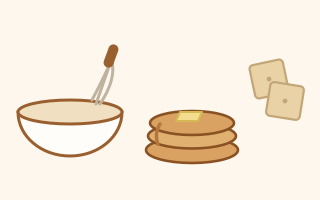

Dried flakes, passed hand to hand. Here is how to wake them up.
Two kinds of recipe: ones that need an active starter at its peak to do the lifting, and ones that use discard purely for flavour and need no rise at all.

The loaf, the pancakes and the crackers are tested and in regular rotation. The rest are collected — gathered from bakers whose judgement I trust, rewritten in plain language and metric, and queued up to try. I am collecting sourdough recipes roughly the way other people collect Pokémon.
So treat an untested one as a good lead rather than a guarantee. Read it through before you start, trust your own eyes over my timings, and tell me if something is off — I will fix it and credit you.
Your starter needs to be properly awake for these — fed, risen and at its peak.
Discard straight from the fridge is fine for all of these. It does not need to be active, and it can be a week or two old.
There is a ready-made prompt you can paste into Copilot to get a new recipe written up in the same format as these pages.
Keep a dedicated discard jar in the fridge and tip each feed's discard into it. It keeps for a couple of weeks and builds up faster than you would think — the chocolate muffins alone will take 240 g.